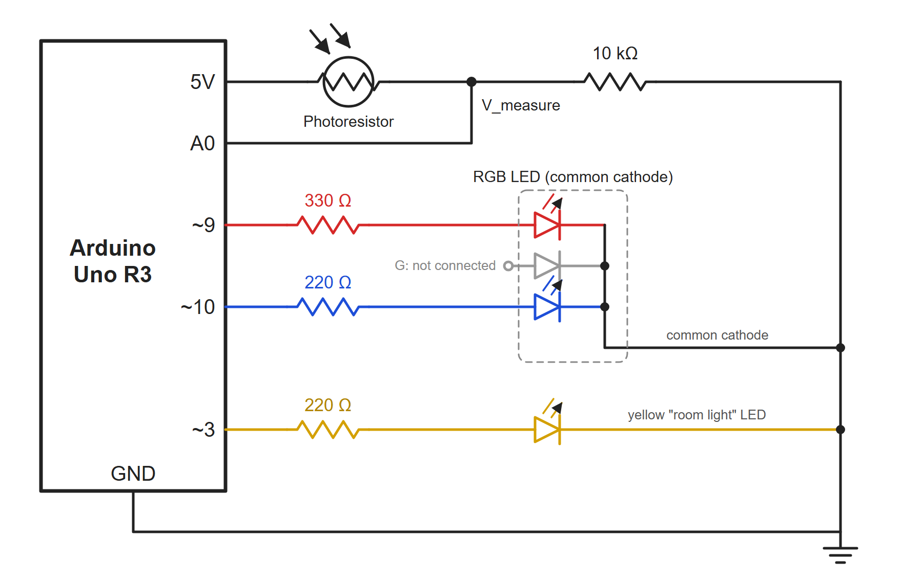
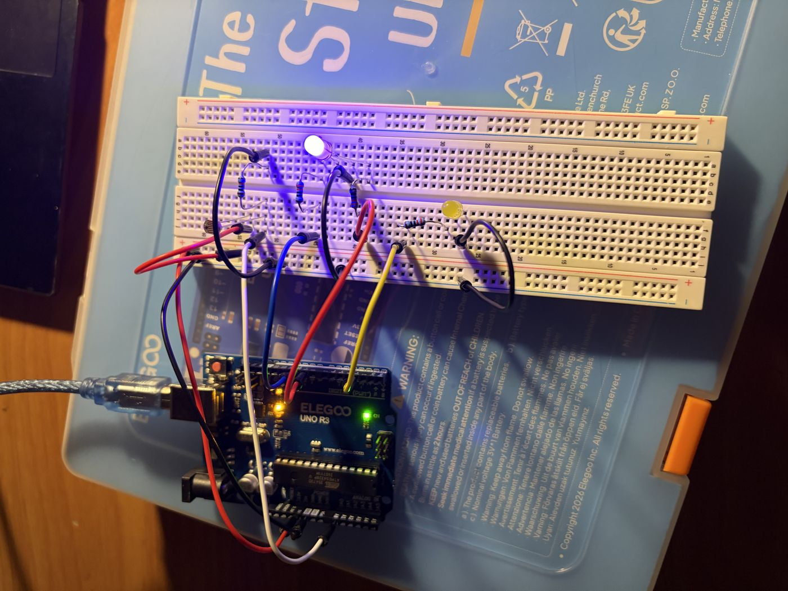
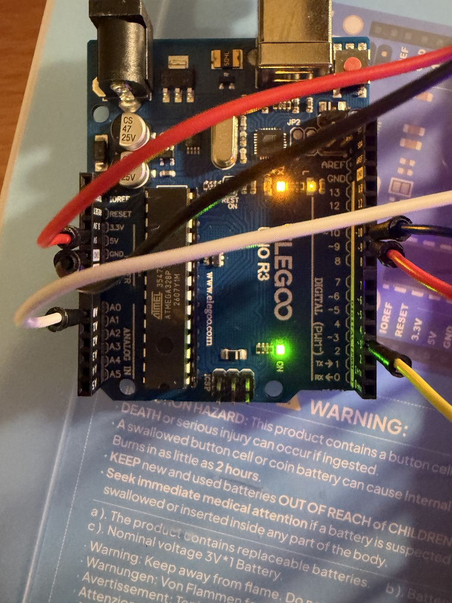
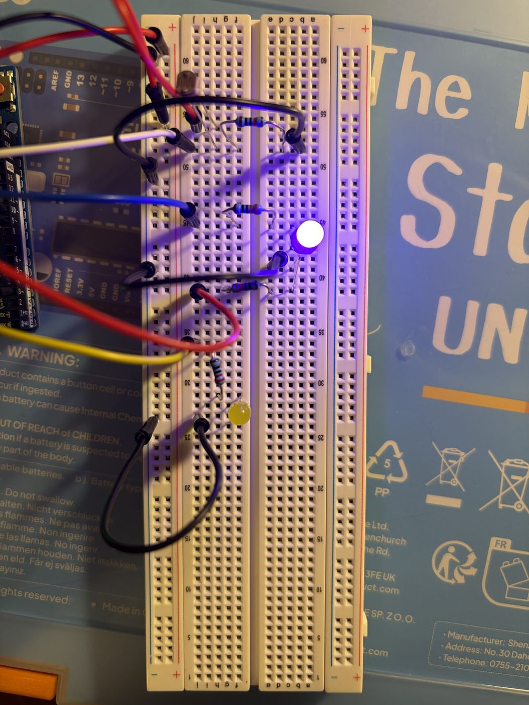
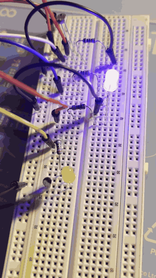
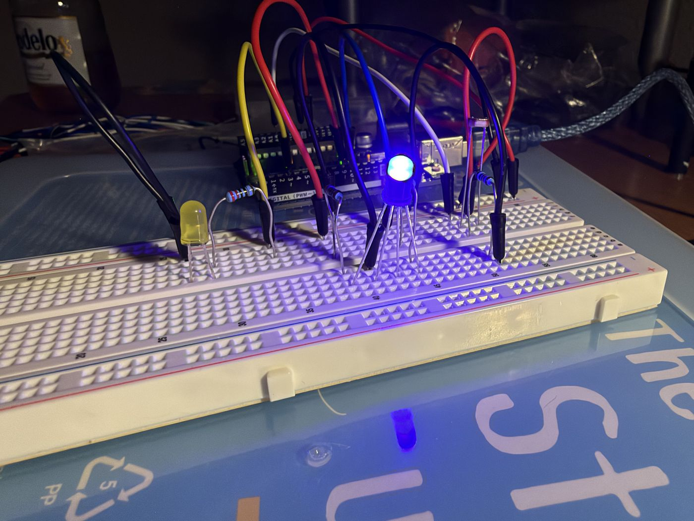
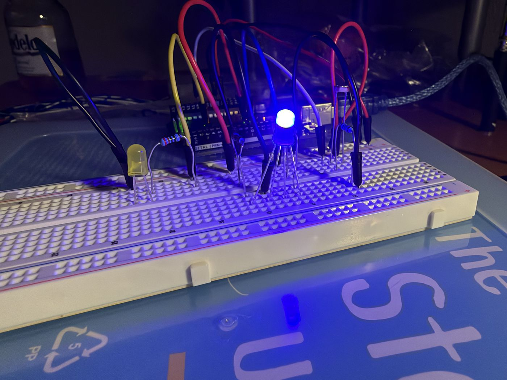
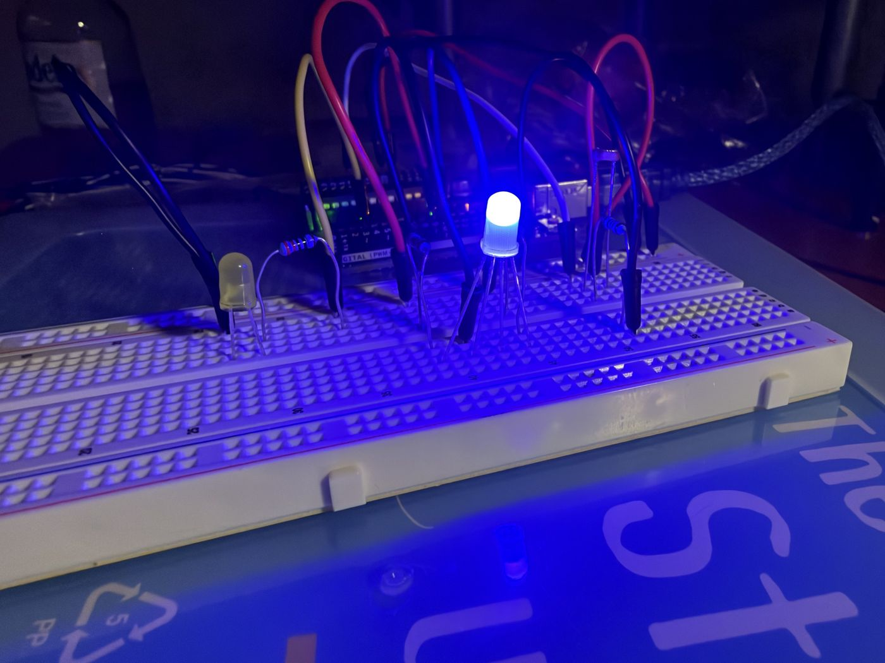
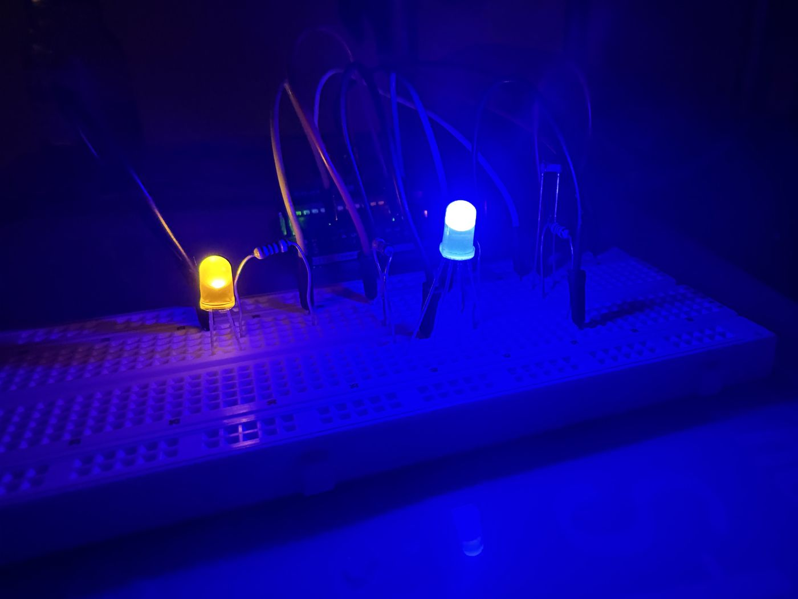
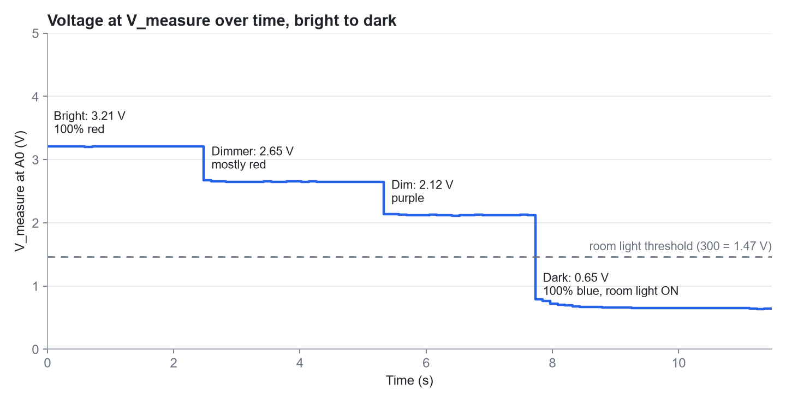

A prototype for a smart home company that senses the light in a room. A photoresistor is used to measure the light. An RGB LED shows the light level as a colour: blue when it's dark, red when it's bright, and purple in between. A yellow LED represents a room light that turns on when it gets dark.

analogWrite() can be used to dim them.
The photoresistor (R1) is between 5 V and A0. The 10 kΩ resistor (R2) is between A0 and ground. The voltage at A0 is:
Vmeasure = 5 V × R2 / (R1 + R2) = 5 V × 10 kΩ / (Rphoto + 10 kΩ)
More light lowers the photoresistor's resistance, which raises the voltage at A0. So more light will output a higher reading.
My photoresistor is about 1 kΩ in bright light and about 100 kΩ in the dark. The fixed resistor gives the biggest voltage change when it's in the middle of that range, so I picked 10 kΩ (√(1 kΩ × 100 kΩ) = 10 kΩ). The readings I expected:
In my room, I used the Serial Monitor to pick 150 as the darkest value and 660 as the brightest value. Anything below 150 just stays fully blue. To find the photoresistor's resistance at each value:
V = reading / 1023 × 5 V Rphoto = 10 kΩ × (5 V − V) / V Darkest: 150 / 1023 × 5 = 0.73 V → Rphoto = 10k × (5 − 0.73) / 0.73 ≈ 58 kΩ Brightest: 660 / 1023 × 5 = 3.23 V → Rphoto = 10k × (5 − 3.23) / 3.23 ≈ 5.5 kΩ
My room never got as bright as 1 kΩ, so I used these measured values in my code. That way the LED is fully red at the brightest light I tested in.
Each LED goes from its pin (5 V), through a resistor and the LED, to ground. The resistor gets the voltage the LED doesn't use:
VR = 5 V − VLED I = VR / R
The red and blue LEDs both use about 2.0 V, so each resistor gets 3 V. A bigger resistor lets less current through, which makes the LED dimmer:
Red: (5 V − 2.0 V) / 330 Ω ≈ 9.1 mA Blue: (5 V − 2.0 V) / 220 Ω ≈ 13.6 mA
Blue gets more current than red, so it looks brighter. When the two colours mix, the in-between colours lean blue. Both are well under the 20 mA limit.
A yellow LED also uses about 2.0 V. With 220 Ω:
I = (5 V − 2.0 V) / 220 Ω ≈ 13.6 mA
That's under 20 mA and bright enough for a room light.



// Pin that reads the voltage divider (V_measure)
const int SENSOR_PIN = A0;
// Pin for the RGB LED's red leg
const int RED_PIN = 9;
// Pin for the RGB LED's blue leg
const int BLUE_PIN = 10;
// Pin for the yellow room light LED
const int LAMP_PIN = 3;
// Darkest reading from testing (0.73 V), shown as 100% blue
const int DARK_READING = 150;
// Brightest reading from testing (3.23 V), shown as 100% red
const int BRIGHT_READING = 660;
// Turn the room light on below this reading (1.47 V)
const int LAMP_ON_BELOW = 300;
// Runs once at startup
void setup() {
// Set the red pin as an output
pinMode(RED_PIN, OUTPUT);
// Set the blue pin as an output
pinMode(BLUE_PIN, OUTPUT);
// Set the yellow LED pin as an output
pinMode(LAMP_PIN, OUTPUT);
// Start the Serial Monitor at 9600 baud
Serial.begin(9600);
}
// Runs over and over
void loop() {
// Read the light level (0 = 0 V, 1023 = 5 V); more light = higher number
int lightReading = analogRead(SENSOR_PIN);
// Convert the reading to volts
float voltage = lightReading * 5.0 / 1023.0;
// Keep the reading between the dark and bright values
int clampedReading = constrain(lightReading, DARK_READING, BRIGHT_READING);
// Turn the light level into a red brightness from 0 to 255
int redBrightness = map(clampedReading, DARK_READING, BRIGHT_READING, 0, 255);
// Blue is the opposite of red
int blueBrightness = 255 - redBrightness;
// Set the red brightness
analogWrite(RED_PIN, redBrightness);
// Set the blue brightness
analogWrite(BLUE_PIN, blueBrightness);
// Keep track of whether the room light is on
bool lampOn;
// If the room is dark
if (lightReading < LAMP_ON_BELOW) {
// Turn the room light on
analogWrite(LAMP_PIN, 255);
// Remember it is on
lampOn = true;
} else {
// Otherwise turn the room light off
analogWrite(LAMP_PIN, 0);
// Remember it is off
lampOn = false;
}
// Print the time label
Serial.print("t=");
// Print the time since startup
Serial.print(millis());
// Print the sensor label
Serial.print(" ms | sensor: ");
// Print the sensor reading
Serial.print(lightReading);
// Print the voltage label
Serial.print(" | V_measure: ");
// Print the voltage
Serial.print(voltage, 2);
// Print the colour label
Serial.print(" V | red/blue: ");
// Print the red brightness
Serial.print(redBrightness);
// Print a slash between red and blue
Serial.print("/");
// Print the blue brightness
Serial.print(blueBrightness);
// Print the room light label
Serial.print(" | room light: ");
// Print ON or OFF and start a new line
Serial.println(lampOn ? "ON" : "OFF");
// Wait 100 ms before the next reading
delay(100);
}DARK_READING = 150 and BRIGHT_READING = 660 are my darkest and brightest readings
(0.73 V and 3.23 V). map() turns that range into 0–255, so 150 is fully blue
and 660 is fully red.
constrain() keeps the reading between 150 and 660. Without it, a reading of 700 would map to
about 275, which is too high for analogWrite().
255 − red, so as one fades out the other fades in. That makes purple in between.
LAMP_ON_BELOW = 300 is about 1.47 V. That's when my room started to feel dim.





The camera hides the red in these photos too. In person, photo 1 is red.
Part of the Serial Monitor output as I made the room darker (… means lines were skipped). Each line shows the time, the reading, the voltage at A0, the red/blue values, and whether the room light is on.
t=10631 ms | sensor: 656 | V_measure: 3.21 V | red/blue: 253/2 | room light: OFF
t=10748 ms | sensor: 657 | V_measure: 3.21 V | red/blue: 253/2 | room light: OFF
t=10866 ms | sensor: 657 | V_measure: 3.21 V | red/blue: 253/2 | room light: OFF
...
t=12989 ms | sensor: 657 | V_measure: 3.21 V | red/blue: 253/2 | room light: OFF
t=13108 ms | sensor: 546 | V_measure: 2.67 V | red/blue: 198/57 | room light: OFF
t=13227 ms | sensor: 544 | V_measure: 2.66 V | red/blue: 197/58 | room light: OFF
t=13345 ms | sensor: 544 | V_measure: 2.66 V | red/blue: 197/58 | room light: OFF
...
t=15844 ms | sensor: 543 | V_measure: 2.65 V | red/blue: 196/59 | room light: OFF
t=15963 ms | sensor: 438 | V_measure: 2.14 V | red/blue: 144/111 | room light: OFF
t=16082 ms | sensor: 437 | V_measure: 2.14 V | red/blue: 143/112 | room light: OFF
t=16202 ms | sensor: 435 | V_measure: 2.13 V | red/blue: 142/113 | room light: OFF
...
t=18123 ms | sensor: 435 | V_measure: 2.13 V | red/blue: 142/113 | room light: OFF
t=18243 ms | sensor: 434 | V_measure: 2.12 V | red/blue: 142/113 | room light: OFF
t=18363 ms | sensor: 161 | V_measure: 0.79 V | red/blue: 5/250 | room light: ON
t=18480 ms | sensor: 156 | V_measure: 0.76 V | red/blue: 3/252 | room light: ON
t=18596 ms | sensor: 148 | V_measure: 0.72 V | red/blue: 0/255 | room light: ON
t=18714 ms | sensor: 143 | V_measure: 0.70 V | red/blue: 0/255 | room light: ON
...
t=22104 ms | sensor: 130 | V_measure: 0.64 V | red/blue: 0/255 | room light: ONYes, it can be either. The difference is which way the voltage moves.
Photoresistor as R1 (top, my circuit): V = 5 × 10k / (Rphoto + 10k)
Bright (5.5 kΩ): 5 × 10 / (5.5 + 10) ≈ 3.23 V → reading ≈ 660 Dark (58 kΩ): 5 × 10 / (58 + 10) ≈ 0.73 V → reading ≈ 150
Photoresistor as R2 (bottom): V = 5 × Rphoto / (10k + Rphoto)
Bright (5.5 kΩ): 5 × 5.5 / (10 + 5.5) ≈ 1.77 V → reading ≈ 363 Dark (58 kΩ): 5 × 58 / (10 + 58) ≈ 4.26 V → reading ≈ 873
On the bottom, the reading goes up when it gets darker. The circuit still works, but the code has to
be flipped: map(reading, 873, 363, 0, 255), and the room light turns on above the
threshold. I put it on top so more light gives a higher number, which is easier to follow.

Each step down is the room getting darker. The voltage stays flat while the light stays the same. The small wiggles are noise of about ±0.02 V.
map() goes from the analogRead() range to the analogWrite() range,
so both numbers would change:
analogWrite() goes from 0 to 1023 instead of 0 to 255. Fully on
is 1023, and blue is 1023 − red.
// Now (10-bit in, 8-bit out) int redBrightness = map(clampedReading, 150, 660, 0, 255); // 16-bit in, 10-bit out long redBrightness = map(clampedReading, 9600, 42240, 0, 1023);
The variables would also need to be long instead of int, because an
int on the Uno only goes up to 32,767. The upside is more detail: the reading would be more
precise and the colour fade would have 1024 steps instead of 256.
Yes. I used AI tools to help me write and comment the code, fromat the documentation page, and compress the GIF so it was small enough for GitHub.